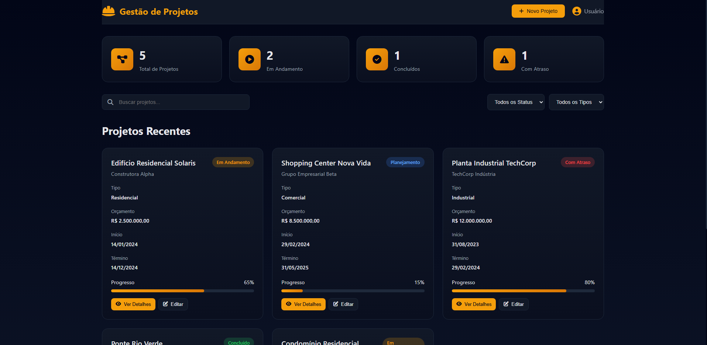
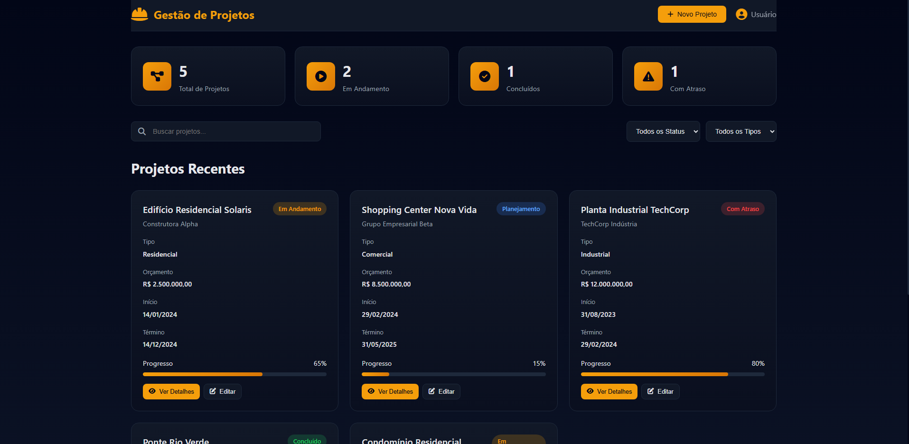

Projetos e Soluções
AWSTEXTRACT
Ferramenta em Python que utiliza a AWS Textract para extração automática de texto de documentos em imagens e PDFs. Implementa OCR avançado com ML para processar documentos em lote, reduzindo tempo manual em 85%. Caso de uso: automação de processamento de invoices, formulários e contratos em ambientes corporativos.
AWS Rekognition
Projeto em Python com AWS Rekognition para análise inteligente de imagens e vídeos em tempo real. Detecta objetos, rostos, cenas e emoções com precisão 95%+. Aplicável a sistemas de vigilância, análise de mídia social e verificação de identidade biométrica em plataformas de autenticação.
Integrações Azure
Suite de scripts Python para integração com Azure Services (CosmosDB, Functions, DevOps). Automatiza deployment, gerenciamento de recursos cloud e CI/CD pipelines. Reduz tempo de provisioning de infraestrutura de 4h para 30min. Essencial para DevOps em ambientes Microsoft-first.
NutriSaúde
Website institucional responsivo para clínica de nutrição com branding profissional. Implementa otimizações SEO para rankeamento local, formulário de agendamento integrado e galeria de serviços. Aumentou leads em 40% com design centrado no usuário e performance 95+ Lighthouse.
Projeto Podcast
Plataforma web para distribução de conteúdo de podcast com player customizado. Inclui RSS feed automático, sistema de episódios com metadados, e integração para sincronização em plataformas (Spotify, Apple Podcasts). Arquitetura escalável com localStorage para offline listening.
Nicolas Tesla
Website educacional com foco em storytelling visual sobre Nikola Tesla. Implementa timeline interativa, galeria de invenções com JavaScript puro, e animações CSS customizadas. Demonstra técnicas avançadas de manipulação DOM e UX em single-page applications sem frameworks.
Teste de Banco de Dados
Framework Python para validação automática de integridade em bancos de dados. Executa testes de performance, constraints, replicação e backup recovery. Reduz tempo de QA em 60% e identifica gargalos de query. Compatível com SQL Server, PostgreSQL e Oracle.

 

Portfolio Empresarial
Portfolio empresarial moderno para empresa de engenharia com sistema de gestão de projetos integrado. Implementa dashboard interativo, controle de tarefas, visualização de progresso em tempo real e relatórios automáticos. Design responsivo com glassmorphism e micro-interações avançadas.
Trilha .NET Fundamentos
Aplicação C# .NET demonstrando best practices em orientação a objetos, padrões SOLID e arquitetura em camadas. Implementa API RESTful com autenticação JWT, validação fluida de dados e repository pattern. Referência para desenvolvimento corporativo em ambientes .NET Framework/Core.